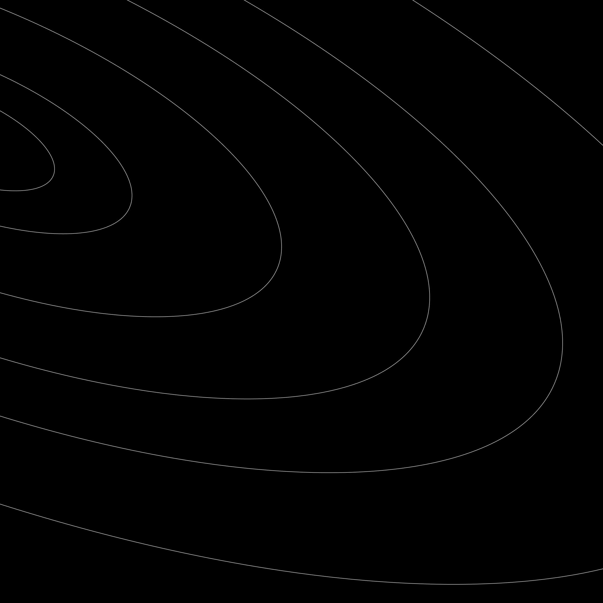

Calendario de quemas
0


IgnisSync
NASA Space Apps Challenge 2026 · Boca del Río · Reto: Harmonization of MODIS and VIIRS Hot Spots
Frente a la mediana de los octubres de 2003 a 2025, en el área seleccionada: 41,600 km² entre Veracruz y Puebla.